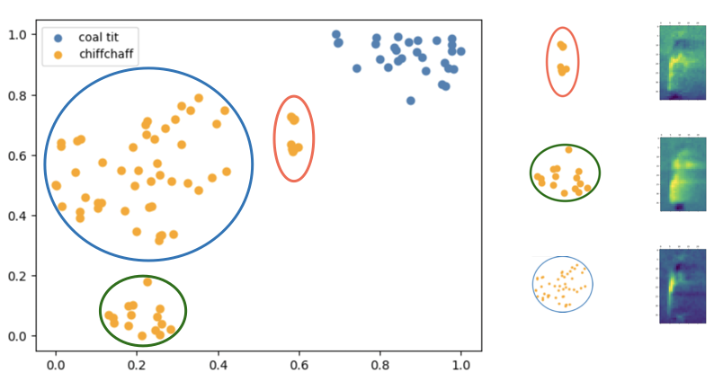
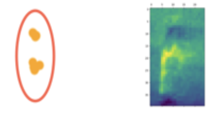
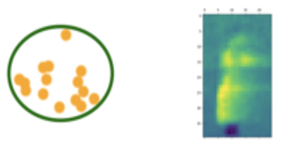
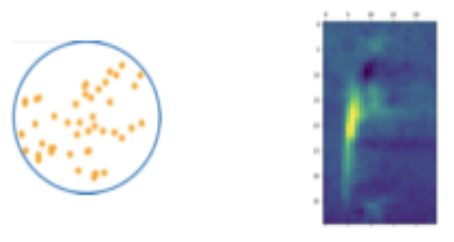

Listen to 73 clips from the original bird calls of common chiffchaff:Listen to 100 clips from the generated calls by NIFTY:Listen to 100 clips from the generated calls by VAE:
Note that there are occasionally strong noises in the VAE generated calls, and some clips are unlike bird calls (e.g. the call at the 9th second).
Subclusters in common chiffchaff

There are several clusters as shown in the dimension reduction data visualization.
 Listen to the bird calls clips of common chiffchaff in subcluster 1
 Listen to the bird calls clips of common chiffchaff in subcluster 2
 Listen to the bird calls clips of common chiffchaff in subcluster 3